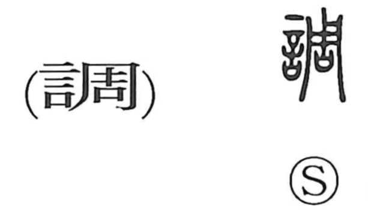

Explanation
調 combines 言, words or utterance, with the sound element 周. 周 originally pictures a rectangular shield covered across its surface with carefully arranged decoration. The complete, ordered pattern brings with it an association of things fitting together.
調 means to bring into harmony or a suitable condition. In music, tones are adjusted so that they agree; in other activities, parts are set in order, balanced, or made appropriate to one another. The character can describe both the act of adjusting and the resulting harmonious state.
A musical mode or tone is also a 調, and the word extends to the manner or condition in which something proceeds. Japanese uses for examining or investigating develop the activity of checking how matters are arranged or stand.